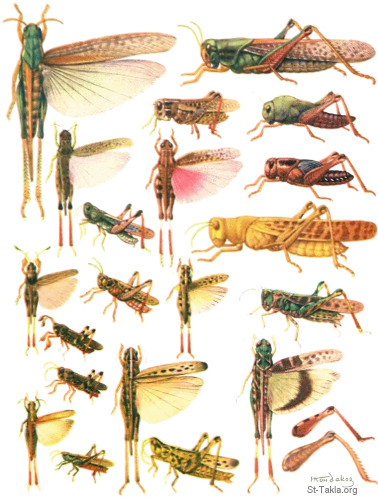

1 / 4
مقدمه عن سفر يوئيل
كتب هذا السفر في بين عامي *
٨٣٥،٧٩٦ ق.م
يوئيل بالعبرية معناها يهوه هو الله *
وهو أبن فثوئيل وتعني الله يفتح
تحدث يوئيل النبي عن التأديبات التي *
بسماح من الله خلال ما رآه من خراب
غوغاء : طور من الجراد فى *
أخطر مراحله 7
زَحَّاف : طور من أطوار الجراد *
الشخصيات الرئيسيه
يؤيل - شعب يهوذا *
المكان الرئيسي
اورشليم *
2 / 4

"الاصحاح الاول1️⃣"
غزو الجراد
يمزج يوئيل حادث غزو الجراد ووصف
آثاره بالمناداة بالتوبة بكونها الطريق
للتمتع بالرحمة
الدعوه الي التوبه
هو سفر التوبة القائم علي التجديد
محدثا إيانا عن بركات الرب ل
أورشليم وإرجاع مجدها
3 / 4

"2️⃣الاصحاح الثاني"
يوم الرب المقبل
الله يُكَلِّم شَعْبُه وَيَحِثَّهُمْ عَلَى التَوْبَة ثُمَّ
يُنْذِرَهُمْ أنَّهُ مُمْكِنْ يُؤدِّبَهُمْ بِشُعُوبٍ أُخْرَى
الوعد بأنسكاب الروح
أحداث يوم الرب القادم الخطيرة المثيرة.
وهو يوم لا يأتي إلا بعد اختطاف
الكنيسة إلى السماء
4 / 4

"الاصحاح الثالث3️⃣"
دينونه الامم
هو وقت خلاص الذين يدعو بآسم الرب
بركات شعب الله
ستكون الكلمه النهايه والآخيره للرب
و ستعلن سياده الله العليا في النهايه